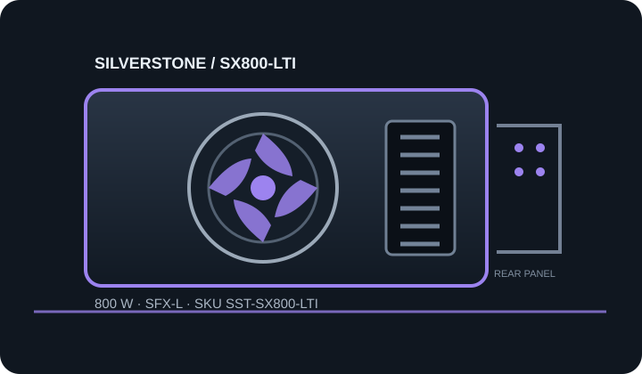

[ POWER CONVERSION // IDENTIFIED MODEL ]
SilverStone SX800-LTI (SST-SX800-LTI)
Manufacturer SKU SST-SX800-LTI. Verify the printed unit label, production revision and regional suffix against matching manufacturer documentation before selecting or installing.

HIGH-VOLTAGE SAFETY: Disconnect mains before external inspection. Never open, probe or repair a PSU; hazardous voltage can remain after unplugging. Replace damaged, wet, burned, modified or unidentified units as complete assemblies or use qualified service.
Model-specific input, output & fit
| Manufacturer model / SKU | SilverStone SX800-LTI; SST-SX800-LTI. Market suffix and hardware revision must match the nameplate. | |||||||||||||||
|---|---|---|---|---|---|---|---|---|---|---|---|---|---|---|---|---|
| Rated output / efficiency certification | 800 W continuous class; 80 PLUS Titanium as identified in manufacturer product material. Certification does not establish condition or system suitability. | |||||||||||||||
| Form factor / ATX/SFX revision | SFX-L; SFX-L enclosure, legacy ATX12V/SFX12V generation, not ATX 3.x. The manual/revision/serial range must match the unit. | |||||||||||||||
| AC input | Use the exact regional nameplate for AC voltage, frequency and current; do not transfer an input range between regional variants. | |||||||||||||||
| Maximum DC output | 800 W total; per-rail and combined ceilings below remain controlling. | |||||||||||||||
| DC output rails |
| |||||||||||||||
| Connectors / modular cables | Fully modular, manual V1.2 set: ATX 20+4-pin ×1; EPS 8-pin ×1 plus 4+4-pin ×1; PCIe 6+2-pin ×4; SATA ×12; peripheral 4-pin ×3; floppy ×1. | |||||||||||||||
| Mechanical envelope | 125 × 130 × 63.5 mm (width × depth × height). Confirm mounting points, inlet/fan orientation, obstruction and cable-bend clearance against the case drawing; never force-fit. | |||||||||||||||
| Fan mode / acoustics | 120 mm fan with semi-fanless mode at low load (manufacturer specifies stop below approximately 20%); published noise span 0–36 dBA. Bearing details changed on later serial revisions. | |||||||||||||||
| Protection features | OCP, OPP, OVP, UVP, SCP and OTP listed by SilverStone. |
Compatibility & safe installation
- 130 mm depth needs SFX-L clearance. Later serial versions can differ in fan bearing; confirm product serial range and guide version before relying on acoustics.
- Check motherboard ATX main power, CPU EPS, GPU leads, peak/transient load, each rail ceiling, AC region and cooling separately; plug shape and nominal wattage alone are insufficient.
- PSU-side modular pinouts are not standardized. Never transfer, splice, repin or adapt leads unless the manufacturer approves the exact cable for this exact model and revision.
- Compare connector clearance and cable-bend space against the actual chassis. Stop if label, connector inventory or production revision differs from the listing.
- Do not open or electrically probe the PSU. Isolate mains and replace a suspect assembly; qualified technicians must follow the matching model procedure.
Revision & sourcing notes
This page distinguishes the listed SKU from adjacent capacities, regional suffixes and redesigns. Similar branding is not enough to identify a cable set or electrical table. Manufacturer documentation and the physical nameplate take precedence where revisions differ.
Published certification and ratings describe the product as specified, not the condition or remaining service life of a used PSU.
Manufacturer sources
- SilverStone SX800-LTI product pageManufacturer product identity, Titanium tier, dimensions and published feature information.
- SilverStone SX800-LTI manualManufacturer rail/connector tables, installation constraints and manual revision; match serial range.
Use the exact model/revision sources and the physical unit label. This reference is not a service procedure or connector pinout.